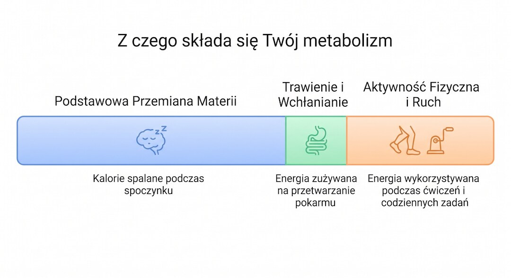
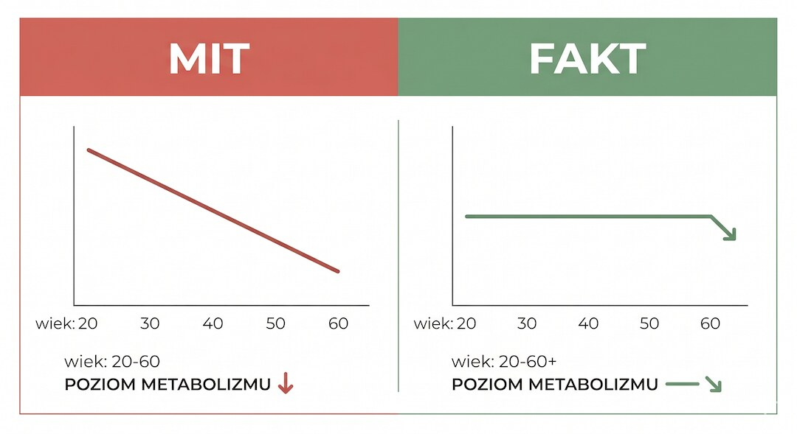
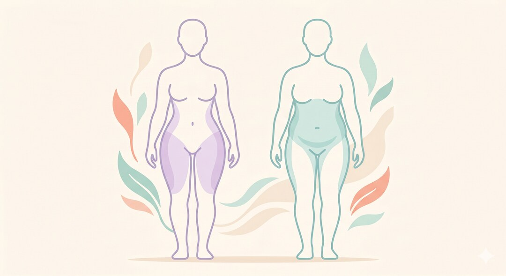

Słyszysz to wszędzie: "po pięćdziesiątce metabolizm siada, dlatego tyjesz". Brzmi logicznie, bo waga faktycznie rośnie u wielu osób w tym wieku. Problem w tym, że duże badanie naukowe sprawdziło to bezpośrednio na ponad 6000 osobach – i wyszło zupełnie inaczej, niż mówi internet.
Szybka odpowiedź
To mit, bo u większości dorosłych metabolizm nie załamuje się nagle po 50-tce, a po uwzględnieniu masy ciała wydatek energetyczny jest zwykle względnie stabilny od 20 do 60 roku życia, natomiast waga częściej rośnie przez mniej mięśni, mniej ruchu, słabszy sen, stres i zmiany hormonalne.
Kluczowe wnioski
- Duże badanie naukowe (Science, 2021, ponad 6400 osób) pokazało, że tempo metabolizmu jest stabilne od ok. 20. do 60. roku życia.
- Realny spadek metabolizmu zaczyna się dopiero po 60. roku życia, nie po 50-tce.
- Przyrost wagi po 50-tce wynika głównie z utraty masy mięśniowej (sarkopenii), spadku aktywności i zmian hormonalnych – nie z samego wieku.
- Trening siłowy i odpowiednia podaż białka to najlepiej udokumentowany sposób, by temu przeciwdziałać.
Skąd w ogóle wziął się ten mit?
Ten mit jest wygodny, bo daje prostą odpowiedź na trudny problem: „tyję, bo wiek wyłączył mi metabolizm”. Pasuje też do reklam tabletek, planów detoksu i obietnic „podkręcania spalania”. Problem w tym, że taka opowieść miesza kilka prawdziwych zjawisk w jedną zbyt łatwą wymówkę.
Po 50-tce naprawdę zmienia się codzienność: mniej spontanicznego ruchu, więcej siedzenia, słabszy sen, czasem mniej białka w diecie i wolniejsza odbudowa mięśni. To może zwiększać masę ciała, ale nie znaczy, że organizm nagle przestaje spalać energię.
- Mit brzmi prosto: „wiek wyłączył spalanie”.
- Fizjologia jest mniej dramatyczna: zmieniają się mięśnie, ruch, sen i hormony.
- Dlatego warto naprawiać realne dźwignie, zamiast szukać cudownego przyspieszacza.
Co mówi fizjologia?
Metabolizm to nie jeden przełącznik, tylko suma kilku kosztów energetycznych. Największą częścią jest podstawowa przemiana materii, czyli energia zużywana na pracę narządów i tkanek w spoczynku. Do tego dochodzi trawienie, trening oraz zwykły ruch dnia codziennego: chodzenie, sprzątanie, schody i gestykulacja.
Duże znaczenie ma masa beztłuszczowa, szczególnie mięśnie. Jeśli przez lata ubywa treningu siłowego, białka i codziennej aktywności, ciało wydaje mniej energii, ale to nie jest magiczny efekt urodzin. To powód, dla którego trening siłowy po 50-tce jest tak ważny.
- BMR to główna część wydatku energetycznego.
- Ruch poza treningiem potrafi robić dużą różnicę.
- Mięśnie są tkanką, o którą warto aktywnie dbać.

Co mówią dowody?
Najczęściej cytowanym punktem zwrotnym jest badanie opublikowane w „Science” w 2021 roku. Naukowcy przeanalizowali wydatek energetyczny ponad 6400 osób od niemowląt do osób starszych. Po uwzględnieniu wielkości i składu ciała metabolizm dorosłych pozostawał względnie stabilny od około 20. do 60. roku życia.
To nie znaczy, że każdy waży tyle samo przez całe życie. Oznacza tylko, że samo „mam 50 lat” nie tłumaczy automatycznie przyrostu tłuszczu. Jeśli rośnie brzuch, lepiej sprawdzić sen, aktywność, alkohol, porcje jedzenia i realne przyczyny oponki po 50-tce.
- Silne dane nie wspierają tezy o nagłym załamaniu metabolizmu po 50-tce.
- Stabilność średnia nie wyklucza indywidualnych problemów zdrowotnych.
- Najlepsze pytanie brzmi: co zmieniło się w Twoim ruchu, śnie i jedzeniu?

Granica prawdy – co w tym micie jest prawdziwe?
W micie jest ziarno prawdy: po 50-tce wiele osób łatwiej odkłada tłuszcz, zwłaszcza w okolicy brzucha. U kobiet po menopauzie zmiany hormonalne mogą wpływać na rozmieszczenie tkanki tłuszczowej, a u obu płci spadek aktywności i mięśni obniża dzienny wydatek energetyczny.
To jednak nie jest dowód, że metabolizm gwałtownie się zepsuł. To raczej sygnał, że trzeba działać na kilka dźwigni naraz: siła, białko, sen, kroki i kontrola kalorii. Podobnie jak przy tłuszczu trzewnym, najgorsza jest wiara w jeden magiczny przełącznik.
- Prawda: ciało po 50-tce może inaczej magazynować tłuszcz.
- Półprawda: „to wszystko metabolizm”.
- Fałsz: „nic się z tym nie da zrobić”.

Co naprawdę działa po 50-tce?
Najnudniejsza odpowiedź jest zwykle najlepsza: odbuduj mięśnie, zwiększ codzienny ruch, jedz wystarczająco dużo białka i pilnuj snu. To nie brzmi jak reklama „metabolicznego spalacza”, ale ma dużo lepsze oparcie w fizjologii niż obietnica, że kapsułka odblokuje ciało.
Dobry start to 2-3 treningi oporowe tygodniowo, codzienny spacer, białko w każdym większym posiłku i obserwacja masy ciała przez kilka tygodni, nie przez dwa dni. Jeśli potrzebujesz prostego planu ruchu, zacznij od modelu 3x30 dla osób po 50-tce.
- Trening siłowy chroni mięśnie i funkcję ciała.
- Białko ułatwia utrzymanie sytości i masy mięśniowej.
- Spacer i NEAT zwiększają wydatek bez dokładania stresu.
- Sen i stres wpływają na apetyt oraz decyzje żywieniowe.
Kiedy warto zgłosić się do specjalisty?
Nie wszystko trzeba tłumaczyć stylem życia. Jeśli masa ciała rośnie szybko mimo podobnego jedzenia i ruchu, pojawia się silne zmęczenie, obrzęki, marznięcie, kołatania serca, duszność albo nietypowe wyniki badań, warto porozmawiać z lekarzem i sprawdzić podstawowe parametry zdrowia.
Rozsądny zestaw startowy to morfologia, TSH, glukoza, lipidogram, próby wątrobowe i ocena leków, które mogą wpływać na apetyt lub masę ciała. Nie chodzi o straszenie, tylko o to, żeby nie przykrywać realnego problemu hasłem „taki wiek”.
- Nagły przyrost masy ciała wymaga większej uwagi niż powolne zmiany z lat.
- Objawy ogólne i nietypowe wyniki badań są powodem do konsultacji.
- Lekarz pomaga wykluczyć tarczycę, leki, obrzęki i problemy metaboliczne.
Najczęściej zadawane pytania
Czy po 50-tce metabolizm naprawdę zwalnia?
Nie załamuje się nagle. Największe badanie wydatku energetycznego sugeruje, że po uwzględnieniu składu ciała metabolizm pozostaje względnie stabilny od około 20. do 60. roku życia. Po 60-tce może spadać stopniowo, ale zwykle nie tłumaczy gwałtownego tycia samym wiekiem.
Dlaczego tyję po 50-tce, skoro jem tyle samo?
Najczęściej zmienia się nie tylko wiek, ale cały bilans dnia: mniej spontanicznego ruchu, mniej mięśni, gorszy sen, więcej stresu i większa łatwość przekraczania kalorii. U kobiet dochodzi też menopauza, która może zmieniać rozmieszczenie tkanki tłuszczowej, zwłaszcza w okolicy brzucha.
Czy da się przyspieszyć metabolizm po 50-tce?
Da się poprawić dzienny wydatek energetyczny, ale nie magiczną tabletką. Najlepiej działa utrzymanie mięśni przez trening siłowy, odpowiednia podaż białka, regularny ruch w ciągu dnia i sen. To nie jest szybki „reset metabolizmu”, tylko odbudowa warunków, w których ciało zużywa więcej energii.
Jakie badania zrobić, gdy waga nagle rośnie?
Jeśli masa ciała rośnie szybko bez jasnej przyczyny, warto spokojnie skonsultować to z lekarzem. Typowo omawia się morfologię, TSH, glukozę lub HbA1c, lipidogram, próby wątrobowe i leki, które mogą sprzyjać zmianie masy. Pilnej oceny wymagają obrzęki, duszność lub nagłe pogorszenie samopoczucia.
Obwód pasa, tłuszcz trzewny, kortyzol i nawyki wspierające metabolizm omawiamy szerzej w Centrum Metabolizmu i Brzucha po 50-tce.
Źródła
- Daily energy expenditure through the human life course (Pontzer et al., Science, 2021)
- Study provides important insights into human metabolism (omówienie badania Pontzera, News-Medical)
- Pontzer and Colleagues Explore How Metabolism Changes Throughout the Life Course (Duke University)
- Sarcopenia - StatPearls (NIH/NCBI Bookshelf)
- Dietary protein and resistance training effects on muscle and body composition in older persons (PubMed)
- Muscle tissue changes with aging (PMC, NIH)
Uwaga: Artykuł ma charakter informacyjny i edukacyjny. Nie zastępuje konsultacji lekarskiej, diagnozy ani leczenia.